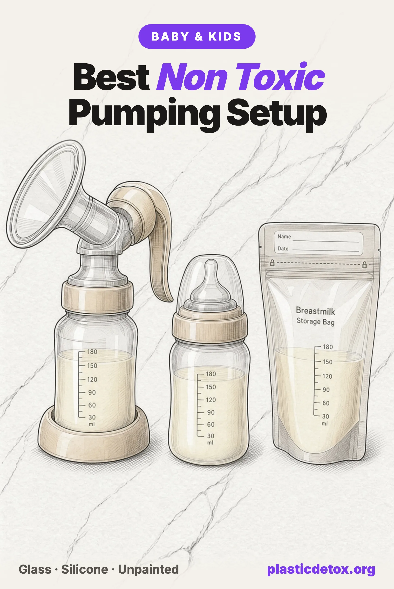

Best Non Toxic Pumping Setup: Glass Where the Milk Sits, Silicone Where It Passes Through (2026)

The 30 Second Summary
- Rank the setup by contact time and the usual advice inverts. The flange everyone talks about holds milk for seconds. The storage container holds it for days or months and then gets warmed, which is the single condition that drives migration hardest.
- Pump straight into glass, no adapter needed. Matyz wide neck glass bottles thread onto Spectra and other wide neck pumps and do all three jobs, collect, freeze and feed. XRF testing found no lead in the glass, the printed logo or the caps. For a standard neck pump, Evenflo Classic Glass has etched markings rather than painted ones.
- The silicone flange exists, but not in the size most people are fitted for. Pumpin' Pal's own page says only its 2XS, XS and Small are silicone. The LacTeck BabyMotion flange is silicone in all six of its sizes, 12 through 27 mm.
- For the freezer, reusable silicone beats a disposable bag. Nuliie silicone bags freeze flat, and Mila's Keeper containers are sized to a feed. Silicone scores with glass in our standard, not with plastic.
- Feed from glass with no paint on it. The Lifefactory borosilicate bottle puts its markings on a removable silicone sleeve instead of painting them on the glass, which is where the lead findings in this category keep turning up.
- The pump motor is the part you can least change and worry about least. A closed system like the Spectra S2 keeps milk out of the tubing entirely. For no plastic at all in the milk path, the Haakaa one piece silicone pump is the only option, and it suits relief and let down rather than exclusive pumping.
A pumped feed passes through more plastic than a nursed one and more than a formula one. It runs through a flange, through a connector and a valve, into a collection bottle, out of that into a storage bag or container, into a freezer for weeks, out into warm water, and finally into a bottle. That is six or seven surfaces for one feed, repeated six or eight times a day for months. Almost every guide to this picks one of those surfaces, the flange, and stops there.
The flange is the wrong place to start. Not because it does not matter, but because milk is inside it for a few seconds at a time, and inside a storage container for up to six months. This guide puts the whole setup in order of how long milk actually sits in each part, which changes what you should buy first, and gives the lab findings on the glass bottles in this category, because two of them carry a great deal of lead.
1. Rank the Setup by the Clock, Not by the Part Count
What governs how much moves out of a material into what it holds is the pairing of three things: what the material is, how long the contact lasts, and how warm it is. Breast milk is an emulsion, so it carries an oil phase, and almost everything that leaches out of a plastic is lipophilic. That is why milk pulls more out of a container than water does, and why the same bottle can be fine for water and a caution for milk. Heat then moves everything one step worse, and it is the single strongest variable in the whole process.
Put the pumping setup against that and the order is not the one the internet uses.
The container milk is stored in is the longest contact by several orders of magnitude, and it is the one step where most people reach for the thinnest plastic in the whole setup, a single use polyethylene bag, and then warm the milk while it is still inside it. If you change one thing, change that. The flange is worth changing too, and it is cheaper, but it is fourth on this list rather than first.
2. What Has Been Measured, and What Has Not
Start with the honest gap. We searched for a published study measuring microplastic release from a pump flange, valve or connector, and found none as of September 2026. Nobody has run that experiment. A gap is not a finding, so we will not tell you a flange sheds a particular number of particles, and you should be sceptical of anyone who does. What exists instead are three measurements around the edges of the question, and they are enough to act on.
Microplastics are in breast milk already. A 2022 study in Polymers by Ragusa and colleagues used Raman microspectroscopy on samples from 34 women in Rome and found microplastics in 26 of them, 58 particles in total, most between 2 and 12 microns. Of the polymers identified, 38 percent were polyethylene, 21 percent polyvinyl chloride and 17 percent polypropylene. A 2024 study in the Journal of Clinical Medicine repeated the exercise on 59 women and found particles in 23 of them, again polypropylene, polyethylene, polystyrene and PVC.
Those studies measure the endpoint, not the route, and maternal diet and household dust both feed into it. What connects them to the equipment is the 2020 Nature Food study by Li and colleagues, which measured polypropylene infant bottles releasing 1.3 to 16.2 million microplastic particles per litre at formula preparation temperature. Polypropylene is what pump flanges, connectors, valves and stock collection bottles are made of. The bottle study does not transfer to a flange, and we are not claiming it does. It does tell you which polymer, warmed and filled with an emulsion, is the one worth avoiding where a glass version exists.
Every brand in this article, picks and cautions alike, now has a current entry in our Product Check tool, with the material we recorded, the lab and year behind any test result, and the reason for the verdict. Type a pump or bottle brand in there for the ten second version.
There is one more measurement, and it is a favourable one worth reporting plainly, because this site does not only publish the bad news. In August 2025 Mamavation had nine disposable and washable nursing pads tested at an EPA certified laboratory for organic fluorine, the marker for PFAS. All nine came back non detect at a 10 ppm detection limit, including the Lansinoh, Momcozy, Frida Mom, Haakaa and Dr. Brown's pads. That covers those nine products and does not generalise to the rest of the aisle, but for the one item in this category people most often worry about, the answer is that the lab looked and found nothing.
3. The Flange: Silicone Exists, Just Not in Every Size
Silicone is scored with glass and stainless steel in our materials standard rather than with the plastics, and the reasoning is narrow: what food grade silicone can give up is residual cyclic siloxanes, which move into fat and with heat and barely at all into cold or body temperature contents. For a part that milk passes through at body temperature, silicone is effectively inert. So a silicone flange is a genuine improvement on a polypropylene one, and it is usually more comfortable as well.
The problem is that we corrected our own advice while writing this. Our baby and toddler guide has recommended Pumpin' Pal's angled flanges as a hundred percent silicone option for over a year. Pumpin' Pal's own product page says something narrower: "Medium, Large and XL Flanges are made with Medical-Grade Polypropylene. 2XS, XS and Small Flanges made with BPA Free Silicone." Most pumps are shipped with a 24 or 27 mm flange, so for the majority of people the Pumpin' Pal in their size is the plastic one. The small sizes remain silicone and remain fine.
Pumpin' Pal OptiFit Angled Flange, Medium, Large and XL
The angled design is a real comfort improvement and nothing hazardous has been found in these. The caution is the material: the maker states these three sizes are medical grade polypropylene, which is a polyolefin in the milk path, and our own guides previously described the whole range as silicone. That was our error and it is corrected. The 2XS, XS and Small are silicone and they pass. Separately, the Amazon listing for the silicone pair carries 3.4 stars across 7 ratings, which is too thin a record for us to put it forward as a pick in any size.
The option that covers the larger fits is LacTeck, whose BabyMotion flange is silicone in all six of its sizes, 12 through 27 mm, with a collapsing window at the base that flexes on each cycle. It is sold direct rather than through a marketplace, and we want to be straight about the evidence behind it: the material statement is the maker's own, no independent laboratory has tested it, and its 102 reviews are hosted on its own store rather than on a marketplace. Nothing adverse is on record. On material it is the best flange in the category, and that is the basis we are recommending it on.

One accessory to skip. Flange inserts are sold as a comfort fix, and the most reviewed of them is the one whose material we can say the least about.
BeauGen Flange Inserts
These drop a flange down by 1 to 2 mm for a better seal, and for a lot of people they solve a real comfort problem, which is why they carry 2,187 ratings. The gap is the material. The listing's own Material line reads "Plastic" and its Material Type line reads "BPA Free, Silicone Free", and the polymer is not named anywhere. An insert sits inside the flange, so it becomes the surface milk runs over and skin presses against, and that is the one part whose composition we cannot state. A maker who will not say what a contact part is made of is a caution under our rule 3.7, not a finding. Name the polymer and this passes.
4. The Collection Bottle: Pump Straight Into Glass
This is the swap almost nobody makes and it takes no adapter on most pumps. Wide neck glass bottles thread directly onto Spectra and other wide neck pumps, and standard neck glass bottles thread onto Medela and similar. Milk that would have sat warm in a polypropylene bottle for the length of a session sits in glass instead, which is inert at every temperature. The same bottle then goes into the fridge or freezer and comes back out to be warmed, so one purchase covers collection, storage and warming.
Glass is not automatically the end of the question, because the paint on the outside of a glass bottle is a separate material from the glass. Independent XRF screening has found lead in the painted measurement markings and logos of several bottles in this category, at levels far above the 90 ppm federal limit for paint on children's products. The paint is on the outside, but it chips into the dishwasher and onto hands, and it is the reason we tell people to prefer etched, unpainted or tested clean glass rather than assuming glass is glass.
COMI Wide Neck Glass Breastmilk Collection Bottles
Sold for exactly the job this section recommends, glass bottles with printed measurement marks that thread onto a wide neck pump, and the one product in this category with a result this far out. XRF screening by Eric Ritter, published by Mamavation in March 2024, measured 4,796 and 2,827 ppm lead on the pink version and 2,000 and 1,987 ppm on the blue. The report does not identify which component carried it, which is why the whole product is held rather than one part of it. Adverse results do not expire until a newer clean test of the same product replaces one, and none has been published.
Two glass bottles pass on the testing and do the collection job. Which one you want depends on your pump's thread, not on which is better.

Matyz Glass Breastmilk Bottles (6 oz, 6 pack)
Borosilicate glass, wide neck thread for Spectra and similar pumps, Medela converter included. Silicone sealing disc under the cap. XRF found no lead in the glass, the printed logo or the caps.
View →
Evenflo Classic Glass Bottles (8 oz, 6 pack)
Tempered glass with etched rather than painted measurement markings, standard neck that fits most pumps and third party teats, silicone teat included. Non detect for lead in independent screening.
View →5. Storage: Glass, or Silicone, Never a Bag You Will Warm
This is the longest contact in the whole setup and the place the default choice is worst. A disposable storage bag is thin polyethylene, milk is an emulsion, the bag is frozen and thawed, and it is very often warmed in a jug of hot water with the milk still inside it. That is the full set of conditions that drive migration: an extracting content, a polyolefin, a long dwell and then heat. We rate the disposable bags use carefully rather than skip, because nothing hazardous has been found in the bags themselves and the convenience is real, but the trade off is real too.
Disposable Polyethylene Storage Bags
The same caution applies across the category, to the Lansinoh, Momcozy, Motif Medical and Nuliie disposable lines alike, and it is about the format rather than any one brand. Milk goes into thin polyethylene, is frozen for up to six months, and is then thawed and frequently warmed while still in the bag. Heat drives migration harder than any other single variable, and a bag gives the milk more plastic surface per ounce than any bottle does. If you use them, and plenty of people reasonably will, the one habit that matters is to pour the milk into glass before you warm it rather than sitting the bag in hot water.
Two reusable options remove the disposable step. Silicone sits in the inert column of our materials matrix alongside glass, and cold storage is the use case where that reading is strongest, since siloxanes move with heat and fat rather than at freezer temperature. Glass is still the first choice in our copy and we will say why plainly: it is heavier, it takes more freezer space than a flat bag, and it breaks. Silicone loses none of those arguments and wins on the freezer.

Nuliie Reusable Silicone Bags (8 oz, 7 pack)
Food grade silicone with a double seal. Stand up to fill, lie flat to freeze. The ABS sealing rod clamps above the milk line and comes off before warming, so milk touches only silicone.
View →
Mila's Keeper Silicone Storage Containers
Food grade silicone containers built to a single feed portion, stackable and freezer safe, and unbreakable coming out of a freezer. Thinner review record than the bags above, at 4.6 stars.
View →The cheapest version of this step involves buying nothing new at all: the Matyz glass bottles from the section above are freezer safe, so the bottle you pumped into is also the bottle it freezes in and the bottle you warm. Leave headroom for expansion, and do not fill a glass bottle to the neck before freezing.
6. Feeding: Glass With No Paint On It
The feeding bottle is warm, it is held for fifteen or twenty minutes, and it happens six or eight times a day, so it ranks just behind storage. The material question is settled: glass releases nothing at any temperature, and the Nature Food figures above are for the polypropylene bottle that four out of five families use instead. What is not settled in this category is the decoration, which is where the lead results keep appearing, including the highest single reading we have on file anywhere in baby feeding.
Lansinoh Glass Baby Bottle
Independent XRF testing by Lead Safe Mama measured 5,605 ppm lead in the painted measurement markings of this bottle, against the 90 ppm federal limit for paint on children's products, and a CPSC violation report was filed. The borosilicate body itself is inert; it is the paint on it that carries the result, and paint on a bottle chips into the dishwasher and onto the hands that hold it. This is the reason we ask for etched, unpainted or tested clean glass rather than treating all glass bottles as interchangeable.
Our pick solves the marking problem by design rather than by testing clean. Lifefactory prints nothing on the glass at all and puts the volume markings on a removable silicone sleeve, which also makes it the most drop resistant glass bottle sold. The screw cap is polypropylene and sits above the milk line when the bottle is upright, which our standard records on the card rather than counting against it, the same way a pump on a glass skincare bottle is recorded.

If you would rather not buy a second set of bottles, you do not have to. The Matyz wide neck glass bottles feed as well as they collect and freeze, with a teat sold separately, and the Evenflo Classic Glass bottles come with a silicone teat already. Both are covered above.
7. Warming and Thawing, Where It Usually Goes Wrong
Heat is the variable that moves everything one step worse, which makes the warming step worth more attention than it usually gets. Three habits do most of the work here, and none of them costs anything.
Never microwave breast milk, in any container. It creates hot spots that can scald, and it destroys immune factors in the milk, so this one is not really a plastics point at all. Never warm milk while it is still inside a storage bag or pouch: pour it into glass or steel first, because a bag in hot water is thin plastic, an emulsion and heat all at once. And thaw in the fridge overnight where you can rather than in hot water, which does the job with no heat at all. If you use a bottle warmer, have the milk in glass before it goes in, and prefer a warm water bath over a steam cycle.
8. The Parts You Cannot Change
Between the flange and the bottle sit a connector, a duckbill or membrane valve and, on a closed system, a backflow protector. All of them are polypropylene and silicone on every electric pump sold, and there is no glass or stainless equivalent to buy. Our standard has a rule for exactly this situation: where no version of a format exists without the polymer, it is recorded on the card and not counted against the verdict, because flagging something a shopper could not have avoided ranks a good product level with a bad one and tells them nothing.
What you can choose is a closed system, which is a real distinction rather than a marketing one. Spectra's own definition is a pump "that does not allow for air and/or bacteria to pass from the mother pumping, down the tubing, and into the motor", and its instruction not to wash the tubing follows from that: on a closed system the tubing never touches milk in the first place. An open system draws milk vapour into tubing and a motor housing you cannot clean or replace, which is a hygiene problem before it is a plastics one.
The more useful thing Spectra publishes is its replacement schedule, because it is the maker telling you that these parts wear out. For anyone pumping exclusively it advises new duckbill valves every 2 to 4 weeks, new backflow protectors every 2 months and new flanges every 6 months, stretching to 3 and 6 months at one to three sessions a day. Worn plastic in a milk path is the mechanism nobody has measured, and replacing the cheap parts on schedule is the response that does not require a study.

Spectra S2 Plus Closed System Pump
Closed system motor, so milk never reaches the tubing or the housing. Milk contact parts stated BPA and DEHP free. Wide neck thread takes the glass collection bottles above. Plug in only.
View →
Spectra S1 Plus Closed System Pump
The same closed system motor and the same wide neck thread, with a rechargeable battery. Heavier than the S2 and the only reason to choose it is pumping away from a socket.
View →Most people get their electric pump through insurance rather than buying one, and a pump supplied that way is the right pump to keep. The flange and the collection bottle are the parts you swap, and they fit whatever motor arrives.
There is exactly one pump with no plastic anywhere in the milk path, and it is the manual kind. A one piece silicone pump works by suction with no valve, no connector and no tubing, which also makes it the easiest thing in this article to clean. It will not replace an electric pump for exclusive pumping, and we are not going to pretend otherwise. What it is very good at is relief, the occasional bottle, and catching the let down on the other side while you nurse.

Haakaa Silicone Manual Pump (4 oz)
One piece food grade silicone with no valve, connector or tubing, so silicone is the only surface milk meets. Works by suction, boil or steam to sterilise. Tips easily without a base.
View →
Haakaa Petal Silicone Milk Collectors (2 pack)
One piece food grade silicone cups that sit inside a bra and catch the let down a nursing pad would otherwise absorb. Hold about an ounce per side, so they need emptying.
View →9. The Whole Setup, Scored
| Part of the setup | How long milk sits in it | The default | What to use |
|---|---|---|---|
| Pump motor and tubing | Never, on a closed system | Open or closed system | A closed system, and replace the valves on the maker's schedule |
| Flange | Seconds per cycle, body temperature | Polypropylene | Silicone, in a size that is actually sold in silicone |
| Connector and valve | Seconds per cycle | Polypropylene and silicone | No alternative exists; recorded, not counted, and replaced on schedule |
| Collection bottle | 15 to 30 minutes, warm | Polypropylene bottle in the box | Glass that threads onto your pump, unpainted or tested clean |
| Storage container | 1 day to 6 months, then warmed | Single use polyethylene bag | Glass, or reusable food grade silicone for the freezer |
| Warming | The step that multiplies all the others | The bag, in hot water | Fridge thaw, then a warm water bath in glass |
| Feeding bottle | 15 to 20 minutes, warm, 6 to 8 times a day | Polypropylene, or glass with painted markings | Glass with no paint on it |
If you are buying in order, the sequence is: a glass collection bottle that fits your pump, which doubles as storage and as a feeding bottle, then a silicone flange in your size, then the habit of pouring milk out of a bag before warming it, which costs nothing. Our baby bottle guide covers the feeding end in more depth, the complete baby and toddler guide puts this in order against the rest of a nursery, and Product Check holds the material and test record behind every verdict here.
10. Frequently Asked Questions
What is the safest way to pump and store breast milk?
Rank the setup by how long milk sits in each part. The flange holds milk for seconds, the collection bottle for the length of a session, and the storage container for days or months before it is warmed. So the swap that changes the most is the container, not the flange. Pump into glass collection bottles that thread onto the pump you already own, store in glass or food grade silicone, and warm in glass rather than in the bag the milk was frozen in. Our top pick for all three jobs is the Matyz wide neck glass bottle, which XRF testing found free of lead in the glass, the printed logo and the caps.
Are silicone breast pump flanges better than plastic ones?
Silicone is scored with glass and stainless in our materials standard, so yes, a silicone flange is the better material. The catch is the sizing. Pumpin' Pal, the silicone flange most guides point to, states on its own product page that only its 2XS, XS and Small flanges are silicone and that Medium, Large and XL are medical grade polypropylene. Most pumps ship with a 24 or 27 mm flange, which means the size most people are fitted for is the plastic one. LacTeck makes a silicone flange in all six of its sizes, 12 through 27 mm, which is the only full silicone option we found that covers the larger fits.
Has anyone measured microplastics coming off breast pump parts?
No. We searched for a published study that measured particle release from a flange, valve or connector and found none as of September 2026. That is a gap in the evidence, not a finding, and we will not write it as one. What has been measured is adjacent and relevant: polypropylene infant bottles released 1.3 to 16.2 million microplastic particles per litre at formula preparation temperature in a 2020 Nature Food study, and microplastics have been detected in human breast milk itself, in 26 of 34 samples in a 2022 Polymers study and in 23 of 59 in a 2024 Journal of Clinical Medicine study.
Are glass breast milk collection bottles safe?
The glass is inert. What varies is the paint. Independent XRF screening reported by Mamavation in March 2024 measured 1,987 to 4,796 ppm lead on COMI's wide neck glass collection bottles, against the 90 ppm federal limit for paint on children's products, and Lead Safe Mama measured 5,605 ppm in the painted markings of Lansinoh's glass baby bottle. The same method found no lead at all in the Matyz glass bottles, in the glass, the printed logo or the caps. So choose glass with etched markings, an unpainted body, or a tested clean printed one, rather than assuming that all glass is the same.
Can you pump directly into glass bottles?
Yes, and it needs no adapter on most pumps. Wide neck glass bottles thread straight onto Spectra and other wide neck pumps, and standard neck glass bottles thread onto Medela and similar. That removes the warm plastic container the milk would otherwise sit in for the length of a session, which is the longest warm contact in the whole process apart from the feed itself. It does not remove the plastic connector and valve above the bottle, because no electric pump is sold without them.
Are disposable breast milk storage bags bad?
They are the weakest link in the setup, and we rate them use carefully rather than skip, because nothing hazardous has been found in the bags themselves. The problem is the pairing. Milk is an emulsion, so it carries an oil phase that pulls more out of a plastic than water does, and a bag gets frozen, thawed and often warmed in water while the milk is still inside it. Heat drives migration harder than any other variable. Reusable silicone bags and glass bottles both avoid that, and if you do use a disposable bag, transfer the milk to glass before warming it.
Which breast pump is the least plastic?
Every electric pump on the market has polypropylene in the milk path, in the flange, the connector and the valve, and there is no glass or stainless electric pump to buy instead. Under our rule for formats with no alternative, that polymer is recorded on the card rather than counted against the verdict, because a shopper could not have done anything about it. What you can choose is a closed system, which keeps milk out of the tubing and the motor entirely. The one pump with no plastic anywhere in the milk path is a one piece silicone manual pump, which suits relief and let down rather than exclusive pumping.
Do nursing pads contain PFAS?
Not in the nine that have been tested. In August 2025 Mamavation had nine disposable and washable nursing pads analysed at an EPA certified laboratory for organic fluorine, the marker used to screen for PFAS, and all nine returned non detect at a 10 ppm detection limit. A clean result covers the products that were actually run and does not carry across to pads that were not tested, so it is not a blanket answer for the category. For the nine that were, the lab looked and found nothing.
Related Articles
- Best Non Toxic Baby Bottles
Polypropylene bottles released up to 16.2 million particles per litre in testing. The glass bottles that pass, and the painted markings that do not. - Non Toxic Baby and Toddler Products Guide
The complete category by category guide, from feeding to sleep to the changing table. - Best Non Toxic Baby Formula
What testing found in the major formula brands, and how to prepare a bottle without adding to it. - Best Plastic Free Food Storage Containers
Glass and stainless storage for everything else in the fridge, with the lid problem solved. - Microplastics and Fertility
What the research shows about microplastics, hormones and reproductive health. - The Non Toxic Baby Registry
123 vetted picks across feeding, sleep, diapers, bath, and travel. No sponsored placements.